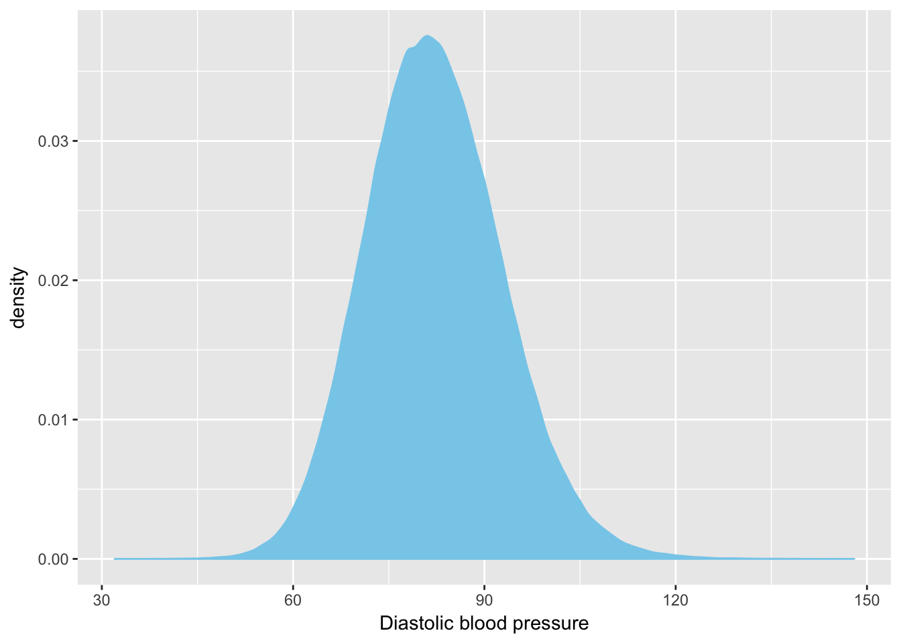

Yan Holtz, Zhihong Zhu, Julanne Frater, Perry Bartlett, Jian Yang, John McGrath
This file is the first part of the vitamin-D GWAS analysis. What it does:
# We will need a few library to run this document
library(tidyverse)
library(rmarkdown) # You need this library to run this template.
library(epuRate) # Install with devtools: install_github("holtzy/epuRate", force=TRUE)
library(xtable)
library(knitr)#Load the file in R
data <- read.table("0_DATA/pheno.txt.gz", header=T, sep=" ")tot <- nrow(data)
blood <- nrow(data[which(!is.na(data$f.4079.0.0)),])I have 502629 people in the UKB.
Among them 468182 people have info concerning their blood pressure (93.146635 %)
Distribution of the distolic blood pressure:
data %>%
ggplot( aes(x=f.4079.0.0)) +
geom_density( fill="skyblue", color="skyblue") +
xlab("Diastolic blood pressure")
The IPAQ score is an estimate of outdoor activities. (International Physical Activity Questionnaire Score). It takes into account:
The sum of them gives the IPAQ score. Let’s compute it in R.
This work is done on the Inode server, the file I get is transfered locally using ssh.
# good repertory
ssh uqyholtz@inode.qbi.uq.edu.au
cd /ibscratch/wrayvisscher/Yan_Holtz/4_UKB_GWAS/3_BLOOD_GWAS/0_DATA
# Get the good column + repeat the ID + change header to respect plink format
zcat /references/UKBiobank/pheno/download/9280_12505_UKBiobank.tab.gz | awk '{print $1,$1,$8,$22,$280,$283,$286,$289,$292,$295}' > tmp
# Transfert locally
cd /Users/y.holtz/Desktop
scp uqyholtz@inode.qbi.uq.edu.au:/ibscratch/wrayvisscher/Yan_Holtz/0_DATA/tmp .
# Open this file in R, and compute IPAQ
R
data <- read.table("tmp.gz", header=T, sep=" ")
a <- data$`f.864.0.0` * data$`f.874.0.0` * 3.3
b <- data$`f.884.0.0` * data$`f.894.0.0` * 4
c <- data$`f.904.0.0` * data$`f.914.0.0` * 8
data$IPAQ <- a + b + c
colnames(data)[c(1,2)] <- c("FID", "IID")
# Number of missing data?
length(which(is.na(data$IPAQ)))
# Save with new score
write.table(data, file="UKB_IPAQ_score.txt", row.names=FALSE, quote=FALSE)
# Send it on Delta
scp UKB_IPAQ_score.txt y.holtz@delta.imb.uq.edu.au:/shares/compbio/Group-Wray/YanHoltz/DATA/PHENOTYPE/UKBA work by Yan Holtz
Yan.holtz.data@gmail.com